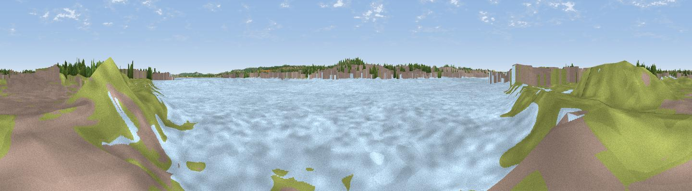

River Thames Viewpoint
#45843 in England · top 96% of its area beats it · near GravesendWhere it is
The exact computed spot (TQ 65050 75200). Click the marker for map links.
The view, rendered

A 360° render of this exact spot computed from the terrain model, tree cover and land cover — summer colours, afternoon light, calibrated against photographs of famous viewpoints. Real trees, hedges and buildings will differ in detail.
The panorama
Grey silhouette: terrain skyline in each direction (720 bearings, Earth curvature and refraction included). Dashed green: skyline with trees (+15 m) and buildings (+8 m) as obstacles. Blue strip: how far the ground is visible on each bearing.
Where the view opens
Wedge length = distance to the farthest visible ground on that bearing (vegetation-aware). Rings at 10, 25 and 50 km.
What fills the view
71% water · 14% built-up · 7% grassland · 6% woodland · 2% cropland
Angular shares of the visible panorama (visual magnitude), not map area. Landscape diversity 0.41 (0–1 Shannon).
Key numbers
More beautiful places nearby
The staircase of upgrades: each row has a higher view potential than everything closer. Driving times are estimates from straight-line distance, calibrated against real road routing — check an actual route before setting out.
| Place | Direction | Drive | Score |
|---|---|---|---|
| Windmill Hill | S · 2 km | ~5 min | 50.3 |
| Viewpoint near Shorne Ridgeway | SSE · 5 km | ~11 min | 53.2 |
| Viewpoint near Shorne | SE · 6 km | ~12 min | 55.1 |
| Viewpoint near Ebbsfleet Valley | WSW · 6 km | ~12 min | 56.1 |
| Viewpoint near Horndon On The Hill | NNE · 11 km | ~21 min | 58.8 |
| Viewpoint near Birling | S · 13 km | ~24 min | 65.2 |
| Viewpoint near Wrotham | SSW · 16 km | ~28 min | 66.6 |
| Viewpoint near Boxley | SE · 19 km | ~32 min | 68.6 |
51.45173, 0.37399 · source: osm viewpoint · position refined by local search. Computed location — check access rights before visiting.